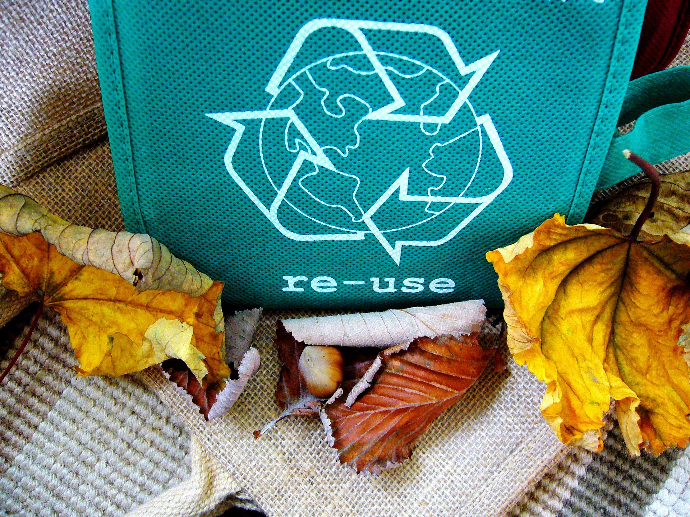

O metal é um elemento químico sólido que apresenta características específicas para sua identificação. Geralmente, os metais apresentam uma cor prateada ou amarelada, porém isso irá depender do tipo do metal que é tratado em questão. São caracterizados também pela boa condutividade, tanto térmica como elétrica.
Com a descoberta do cobre (primeiro metal a ser encontrado, ainda no período pré-histórico), surgiu a possibilidade de aprimorar as ferramentas utilizadas a partir daquela época. Os metais quando aquecidos, se tornam maleáveis, ou seja, se tornam fáceis de serem moldados, tomando formatos diferentes.
Existem também, as ligas metálicas, que são materiais que possuem dois ou mais elementos na sua composição, sendo que ao menos um deles é um elemento metálico. São qualificados em dois tipos: ferrosos e não-ferrosos. Os metais ferrosos, possuem uma porcentagem de ferro, o que os tornam mais duros e menos maleáveis do que os metais não-ferrosos.
O metal é fácil de ser identificado, quase tudo o que está ao nosso redor possui algum elemento metálico na sua composição. Portões de ferro, portas de alumínio, cabos de energia ou fios condutores usam o cobre pelo fato dele ser um dos melhores metais que conduzem eletricidade. Lataria de veículos, panelas de cozinha, talheres, chaves, acessórios como correntes ou braceletes.

Embalagens como latas de bebidas ou alimentos enlatados também são feitos de metal. As vezes não paramos para pensar, mas o metal está na maior parte do tempo em nossas mãos. O celular possui vários metais na sua constituição, tanto na sua carcaça, como internamente. Um exemplo é o lítio, existente na bateria.
Os metais se diferenciam na forma de sua obtenção na natureza. O ouro e a platina por exemplo, são encontrados em estado puro na natureza e não necessitam de processo de beneficiamento.
O ferro não possui estas mesmas origens. É obtido através de seus principais minérios. São eles a hematita, a magnetita, a limonita e a siderita. A princípio, o minério precisa ser preparado para torná-lo adequado ao uso no alto-forno. Quando o minério é encontrado em pó, é necessário que ele passe por dois processos: a sinterização ou a pelotização. A partir da pelotização, o minério é moído e depois umedecido para formar um aglomerado.
Esse aglomerado é posto em um moinho em forma de tambor, e conforme esse tambor gira, o aglomerado se une até virar pelotas. Após esse processo, essas pelotas são levadas para secagem e a queima para o seu endurecimento. Depois desse processo, o minério vai para o alto-forno para se transformar em ferro-gusa, matéria prima para a fabricação do aço e do ferro fundido. Após sair do alto-forno, o ferro-gusa pode ir para a fundição, onde é usado na fabricação de peças de ferro fundido, ou pode ir para a aciaria, onde pode ser misturado com sucata de aço ou com outros metais, para se transformar em uma liga ferrosa.
As formas de extração usadas provocam danos irreversíveis e um desequilíbrio ambiental nas áreas onde ocorre a mineração. A extração do minério de ferro, por exemplo, exige o uso de uma quantidade elevada de água, que mais tarde é devolvida ao meio ambiente, mas agora com baixa qualidade por conter muito barro. Essa água barrenta, se não tratada de forma correta, afeta a vida de seres que vivem em rios e lagos das regiões onde ocorre esse processo.
Segundo a Agência Brasil, até o ano de 2014, pesquisadores do Centro de Tecnologia Mineral (Cetem) do Ministério da Ciência, Tecnologia e Inovação estudaram cerca de 105 territórios em 22 estados brasileiros que sofreram as consequências da mineração, e foi confirmado que a extração é uma atividade “extremamente impactante nas regiões onde está instalada. Ela gera um conjunto de consequências ambientais e socioeconômicas”, disse Francisco Rego Chaves Fernandes, pesquisador do Cetem.
Remoção da vegetação nas áreas de extração, contaminação do solo pelos elementos utilizados na mineração, poluição do ar devido a queima do mercúrio que é usado na extração de outros tipos de minério, remoção forçada de animais que vivem nos locais que se tornarão áreas de mineração. Estes são exemplos de graves impactos ambientais, que gerarão um desequilíbrio nos ecossistemas, danos que serão prejudiciais e irreversíveis para todos.
Muitas vezes, após fazermos o uso de uma embalagem por exemplo, que contenha algum tipo de metal na sua composição, nós a descartamos no lixo comum. Existem métodos alguns simples que podem nos ajudar a evitar o descarte irregular destes materiais, assim também, evitando maiores impactos ambientais que os mesmos podem causar.
Um método que pode ser adotado, é a separação minuciosa dos materiais pelo seu tipo, por exemplo: ao invés de colocar todos juntos no latão de lixo reciclável amarelo, caso haja uma maior diversidade de metais, é mais adequado separá-los pelo seu tipo, materiais compostos de alumínio somente com outros materiais compostos de alumínio, materiais de cobre somente com materiais de cobre, e assim por diante. Desta forma, o descarte destes materiais irá ficar mais fácil e seguro.
Em paralelo a este método, há também como alternativa, a opção fazer a reutilização de alguns materiais. Tendo em vista que a extração dos minerais deste metal causou graves danos ambientais e teve um determinado custo para realização do processo, é desejável que, se houver a possibilidade, usarmos o material em questão para outros fins, além do qual foi projetado na sua origem. Por exemplo: podemos fazer o uso de latas de bebidas como decoração para casa, usando-as como um atrativo em cima dos móveis, ou como um porta canetas personalizado, irá depender da criatividade de cada pessoa.
A reciclagem é o processo que faz com que os materiais retornem ao formato similar das suas propriedades de origem e estejam aptos a, posteriormente, passarem por um novo processo de produção. Desta forma, não é necessário que seja feita a extração de novos minérios daquele metal, amenizando assim o consumo de energia e os impactos ambientais. O processo de reciclagem do metal se dá por basicamente três etapas. A princípio, os materiais são levados pelos coletores para as empresas que fazem o processo de reciclagem. Após chegar lá, é realizada a separação e a limpeza destes metais que chegam todos misturados. Por fim, depois de separados, são enviados para serem derretidos e assim, estarem prontos para um novo ciclo de produção.